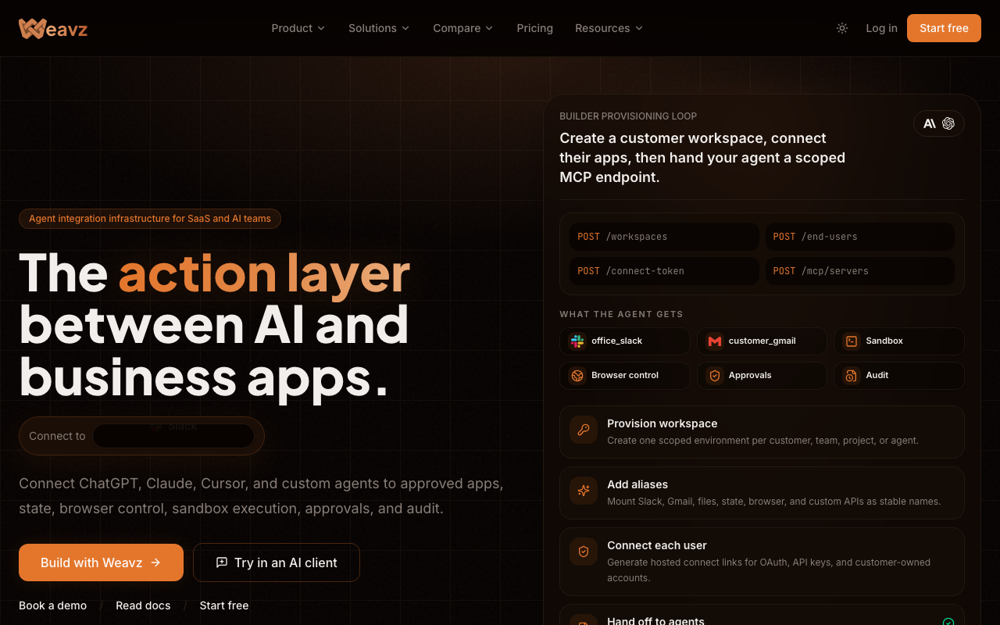
Think aloud: I need to complete the configured account access before starting the product task.
URL/context: https://weavz.io/

Think aloud: This field needs the account detail I was given, so I will fill it before submitting the form.
URL/context: https://dashboard.weavz.io/login?marketingReturnTo=https%3A%2F%2Fweavz.io%2F
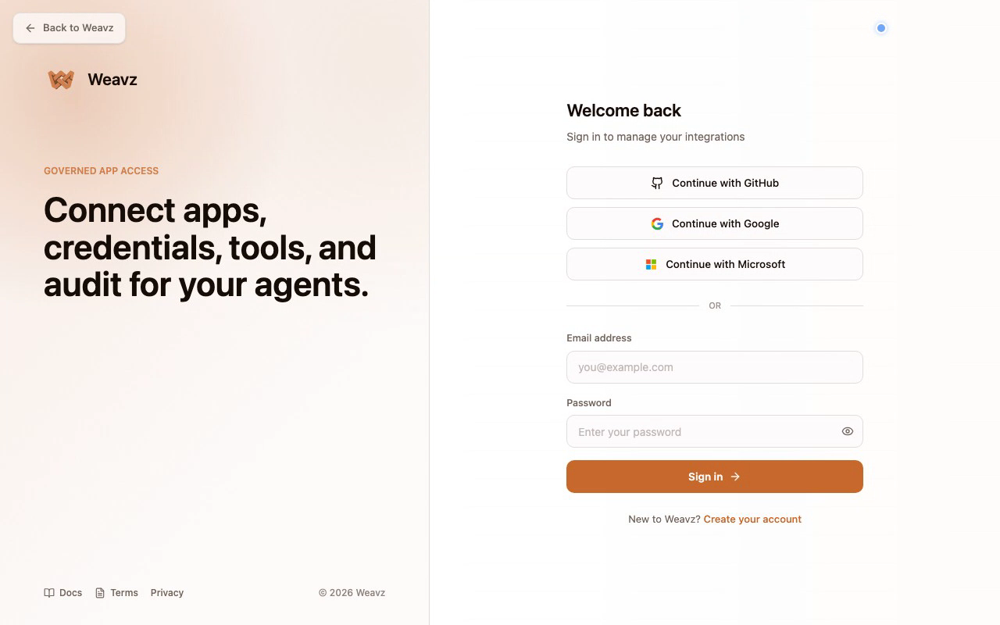
Think aloud: This field needs the account detail I was given, so I will fill it before submitting the form.
URL/context: https://dashboard.weavz.io/login?marketingReturnTo=https%3A%2F%2Fweavz.io%2F
Think aloud: Both fields are filled in now, so let's get into the actual dashboard and see what governance controls exist.
URL/context: https://dashboard.weavz.io/login?marketingReturnTo=https%3A%2F%2Fweavz.io%2F
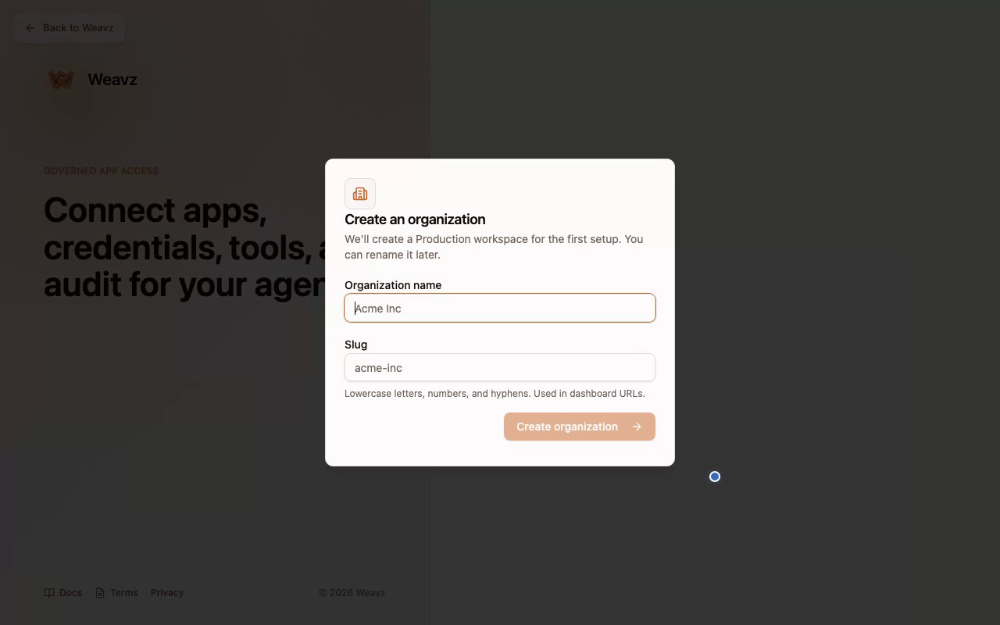
Think aloud: Need to create an organisation first before I can see any settings. Let me name it something sensible so the slug fills in properly.
URL/context: https://dashboard.weavz.io/onboarding
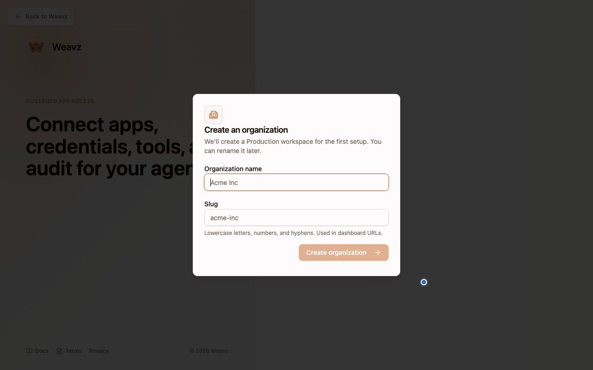
Think aloud: Name and slug are both filled in now, let's create this organisation and get through to the actual settings.
URL/context: https://dashboard.weavz.io/onboarding
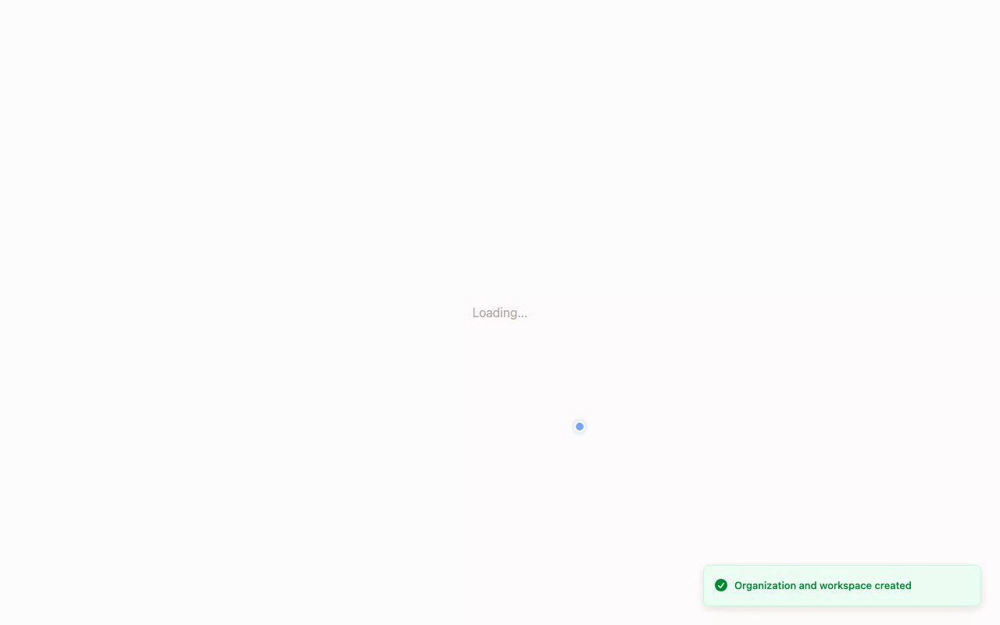
Think aloud: set up and I'm into the workspace now. I can see Approvals with 'Human Gates' listed in the footer tiles - that's exactly what I need to check first.
URL/context: https://dashboard.weavz.io/workspaces/2158037a-659f-4210-abff-9e4b7a8450e0
Think aloud: No pending approvals yet - makes sense, nothing's been gated. I need to set up a policy first, so let's check Policies tab and then create a New Policy for a human gate.
URL/context: https://dashboard.weavz.io/approvals?workspaceId=2158037a-659f-4210-abff-9e4b7a8450e0
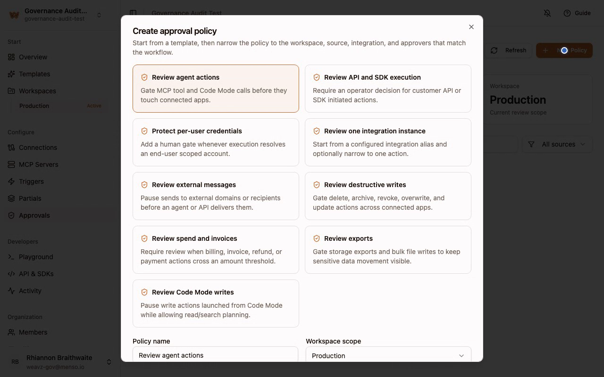
Think aloud: This template gates MCP tool and Code Mode calls before they touch connected apps - that's a proper human gate. Name's filled, scope is Production. Let's create it.
URL/context: https://dashboard.weavz.io/approvals?workspaceId=2158037a-659f-4210-abff-9e4b7a8450e0
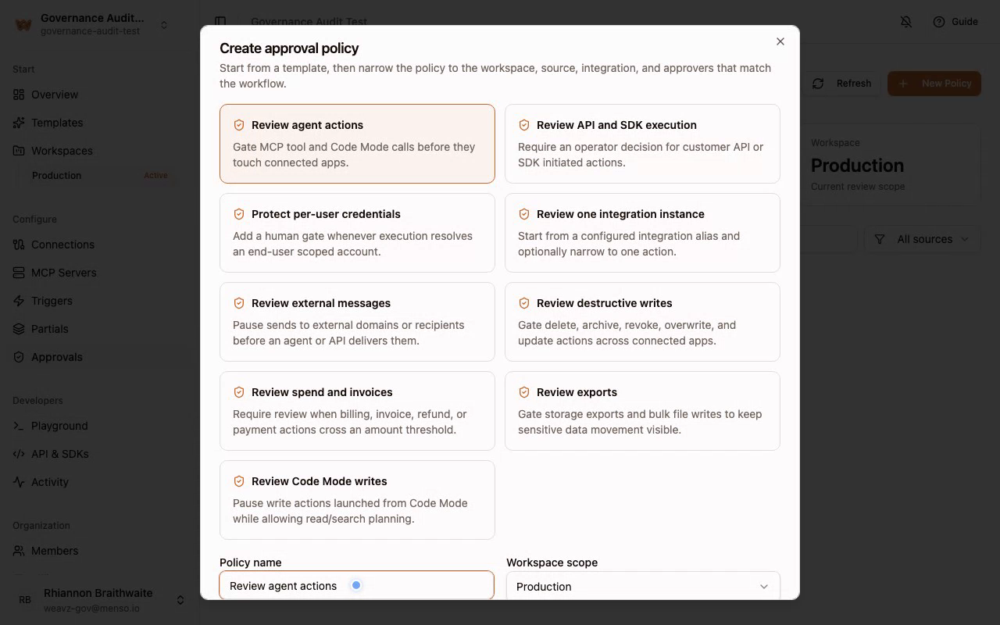
Think aloud: named, scoped to Production, MCP tools and code checked, owner and admin as approvers, status enabled. This looks like a real gate - creating it now.
URL/context: https://dashboard.weavz.io/approvals?workspaceId=2158037a-659f-4210-abff-9e4b7a8450e0
Think aloud: The toast said policy created and it shows one active policy now. Before I trigger anything, let me check the Policies tab to see exactly what got saved.
URL/context: https://dashboard.weavz.io/approvals?workspaceId=2158037a-659f-4210-abff-9e4b7a8450e0
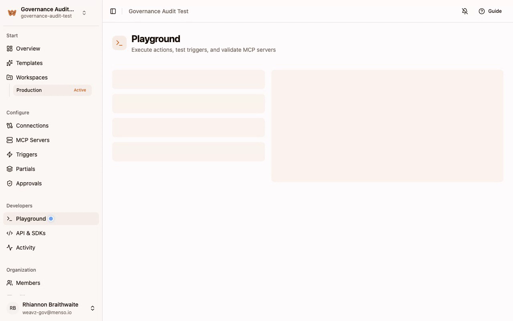
Think aloud: The policy's confirmed - Review agent actions, Production scope, MCP tools and Code Mode, require approval, one hour timeout. That's the gate sorted. Now I need to actually trigger something that should hit it.
URL/context: https://dashboard.weavz.io/approvals?workspaceId=2158037a-659f-4210-abff-9e4b7a8450e0
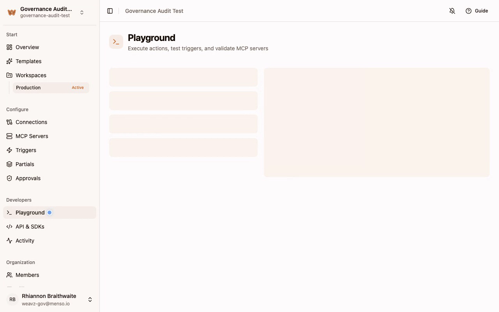
Think aloud: The playground page is still loading - I just see empty placeholder boxes, no actual buttons for triggering an action yet. Let me give it a second.
URL/context: https://dashboard.weavz.io/playground
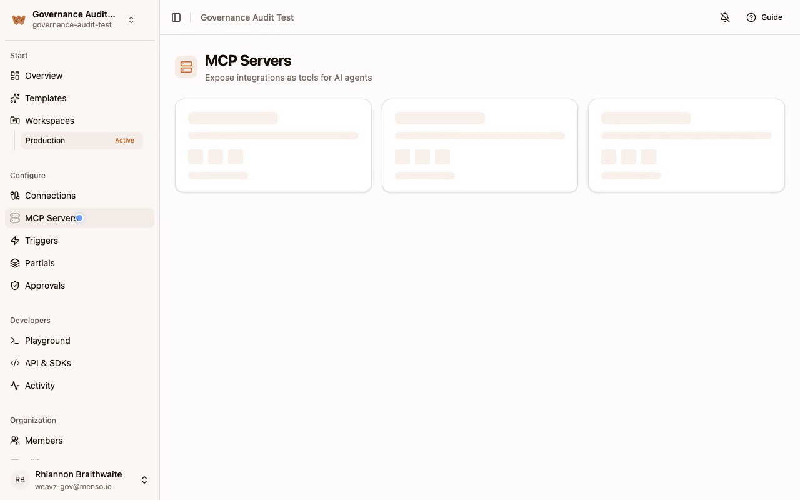
Think aloud: Still just four empty pink boxes on the Playground - no labelled actions, no way to actually pick a tool to run. That's odd for a page meant to execute actions and test triggers.
URL/context: https://dashboard.weavz.io/playground
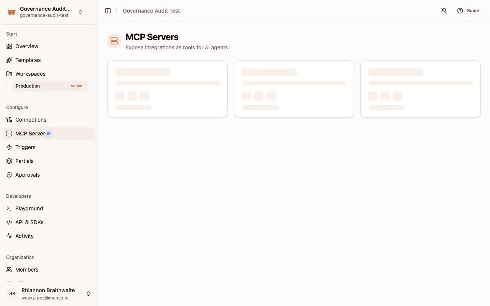
Think aloud: I've already got a policy created - now I need something to actually run against it. MCP Servers is still just grey loading blocks, no server names or actions listed yet.
URL/context: https://dashboard.weavz.io/mcp-servers
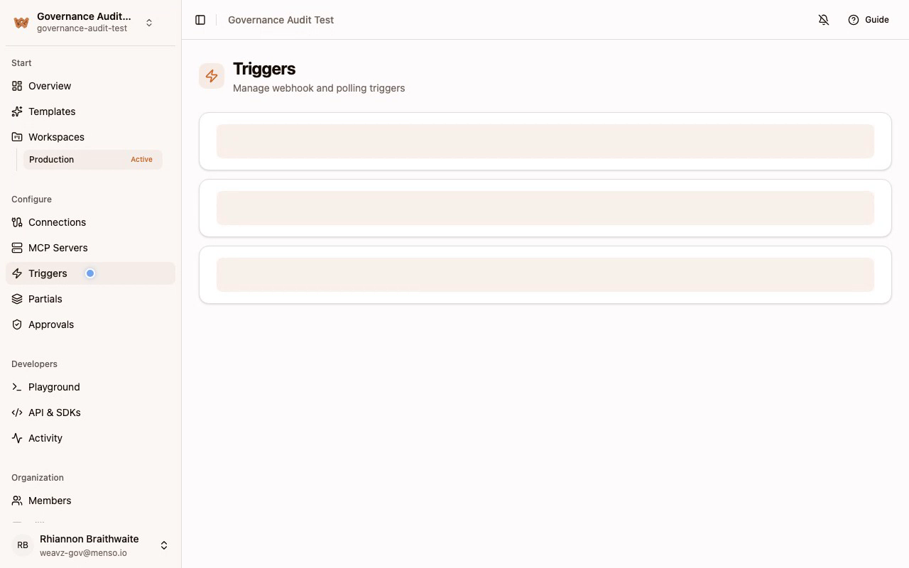
Think aloud: MCP Servers still hasn't loaded anything usable. Let me try Triggers instead - that's meant for firing actions, might actually work.
URL/context: https://dashboard.weavz.io/mcp-servers
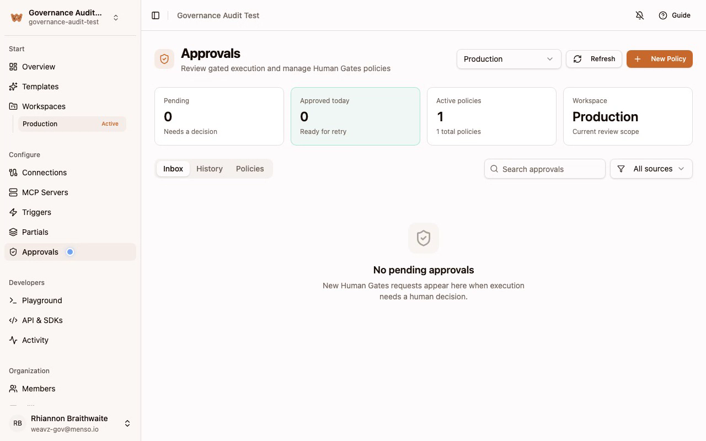
Think aloud: Triggers page's the same story - empty placeholder cards, no actual trigger names or fire buttons. Three dead ends in a row now: Playground, MCP Servers, Triggers.
URL/context: https://dashboard.weavz.io/triggers
Think aloud: Approvals shows zero pending and one active policy - that's the gate I set up. But Triggers and MCP Servers both failed to load, so I've got no visible way to actually fire the action that should hit this gate.
URL/context: https://dashboard.weavz.io/approvals?workspaceId=2158037a-659f-4210-abff-9e4b7a8450e0
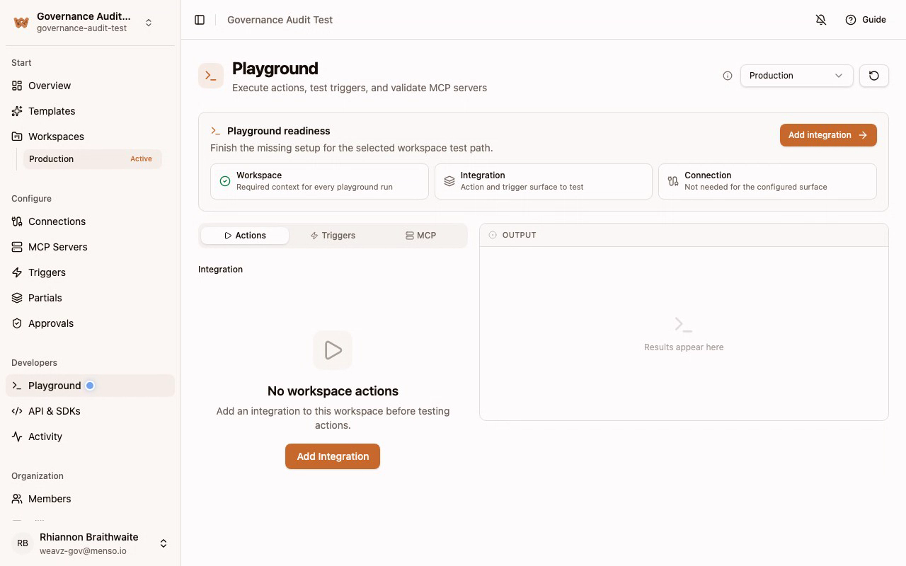
Think aloud: The policy's confirmed here - Require approval, MCP tools and Code Mode, 1 hour timeout. That's solid. But I still need to actually fire something that hits it, and Playground, Triggers, and MCP Servers have all failed on me so far.
URL/context: https://dashboard.weavz.io/approvals?workspaceId=2158037a-659f-4210-abff-9e4b7a8450e0
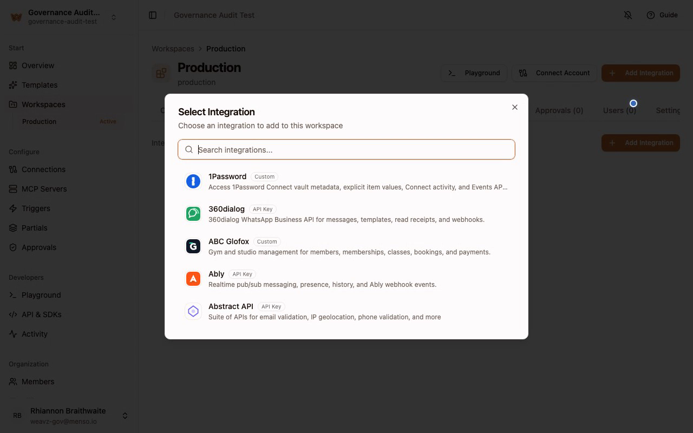
Think aloud: No workspace actions until I add an integration - that's the missing piece for actually triggering something against my gate. Let me see what adding one involves before deciding this is a dead end.
URL/context: https://dashboard.weavz.io/playground?workspaceId=2158037a-659f-4210-abff-9e4b7a8450e0
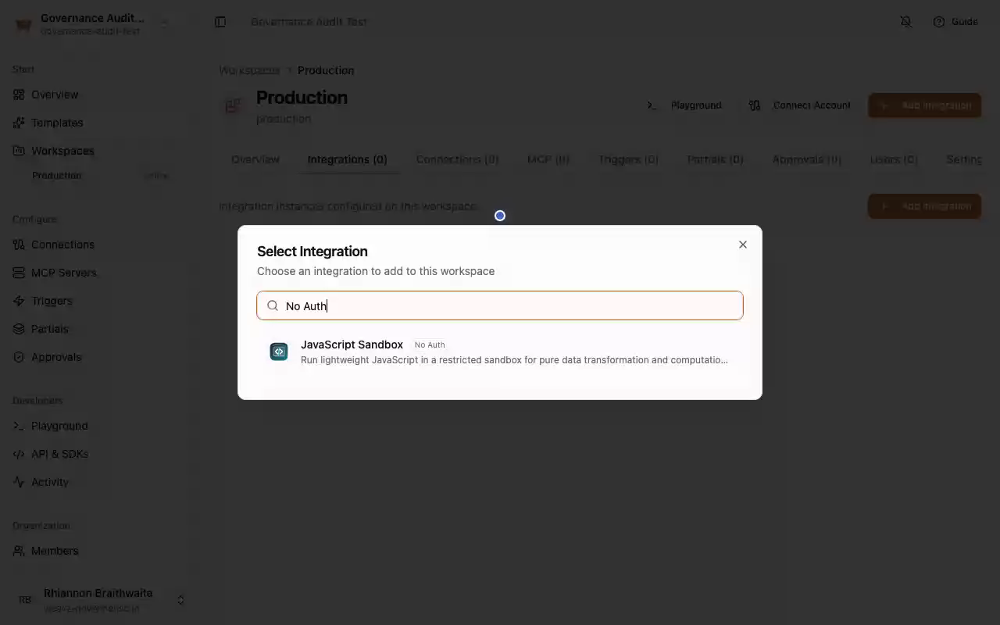
Think aloud: I want one more concrete signal from this page before I decide whether to keep going.
URL/context: https://dashboard.weavz.io/workspaces/2158037a-659f-4210-abff-9e4b7a8450e0?tab=integrations
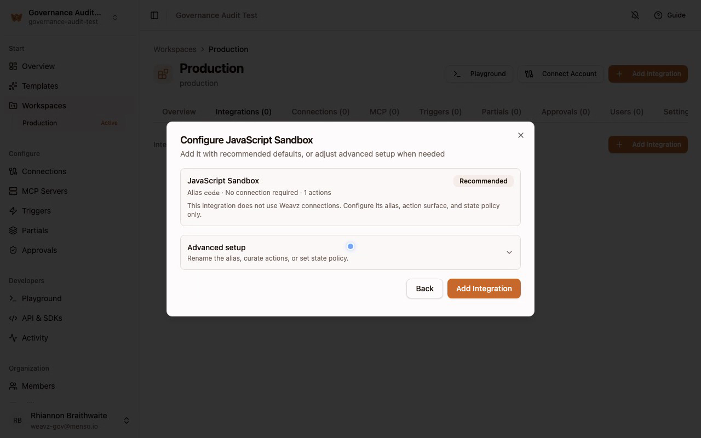
Think aloud: JavaScript Sandbox needs no auth at all - no keys, no OAuth, just a pure sandbox. That's the low-risk option I want to add so I can actually trigger something against my policy.
URL/context: https://dashboard.weavz.io/workspaces/2158037a-659f-4210-abff-9e4b7a8450e0?tab=integrations
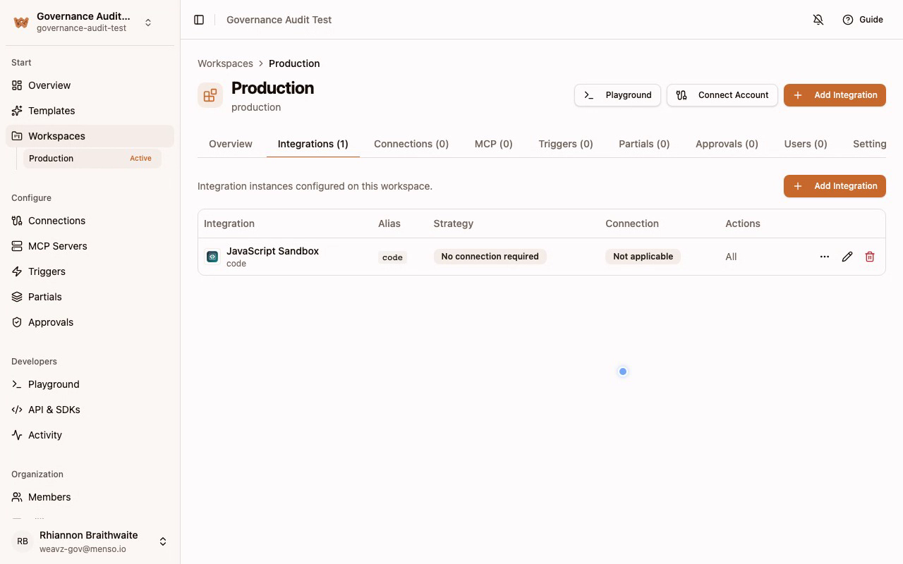
Think aloud: No connection required, one action, alias code - simple enough. Adding this so I've got something to trigger against my gate.
URL/context: https://dashboard.weavz.io/workspaces/2158037a-659f-4210-abff-9e4b7a8450e0?tab=integrations
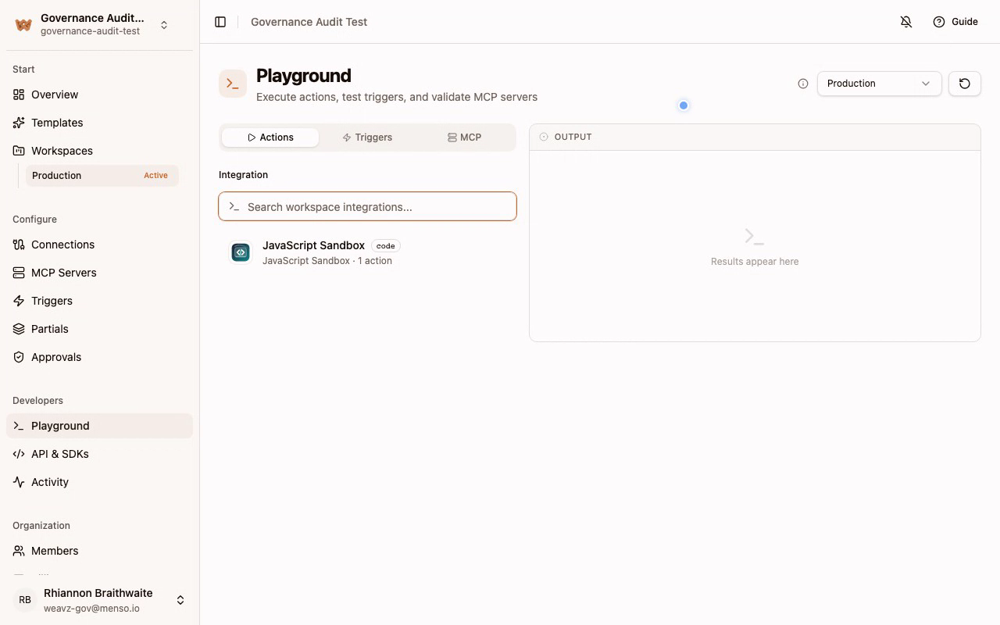
Think aloud: added now - Integrations shows one. Right, now I need to actually run this thing from the Playground and see if my policy catches it.
URL/context: https://dashboard.weavz.io/workspaces/2158037a-659f-4210-abff-9e4b7a8450e0?tab=integrations
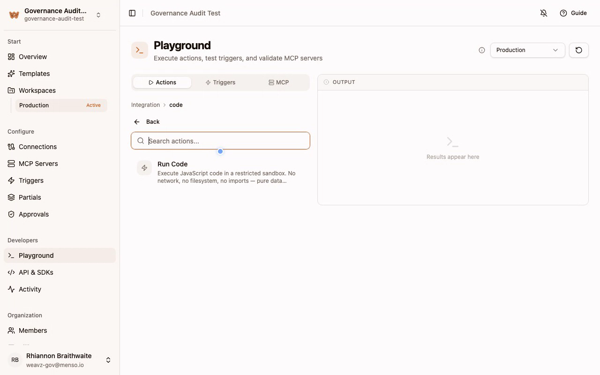
Think aloud: sitting there with one action. Let's click into it and actually run something against my policy.
URL/context: https://dashboard.weavz.io/playground?workspaceId=2158037a-659f-4210-abff-9e4b7a8450e0&playgroundTab=actions
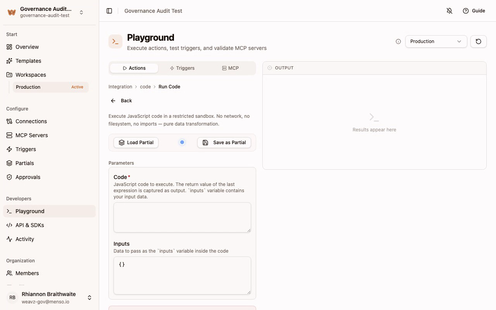
Think aloud: Run Code is the actual action tied to my policy. Clicking into it to see if I can trigger it now.
URL/context: https://dashboard.weavz.io/playground?workspaceId=2158037a-659f-4210-abff-9e4b7a8450e0&playgroundTab=actions
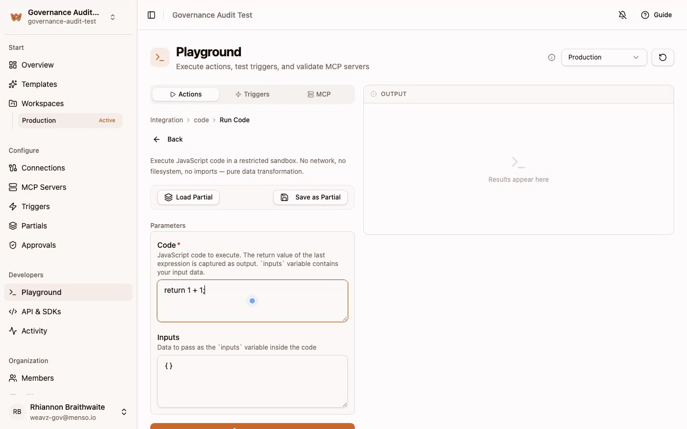
Think aloud: Let me put a simple script in here so I've got something concrete to trigger against my new policy.
URL/context: https://dashboard.weavz.io/playground?workspaceId=2158037a-659f-4210-abff-9e4b7a8450e0&playgroundTab=actions
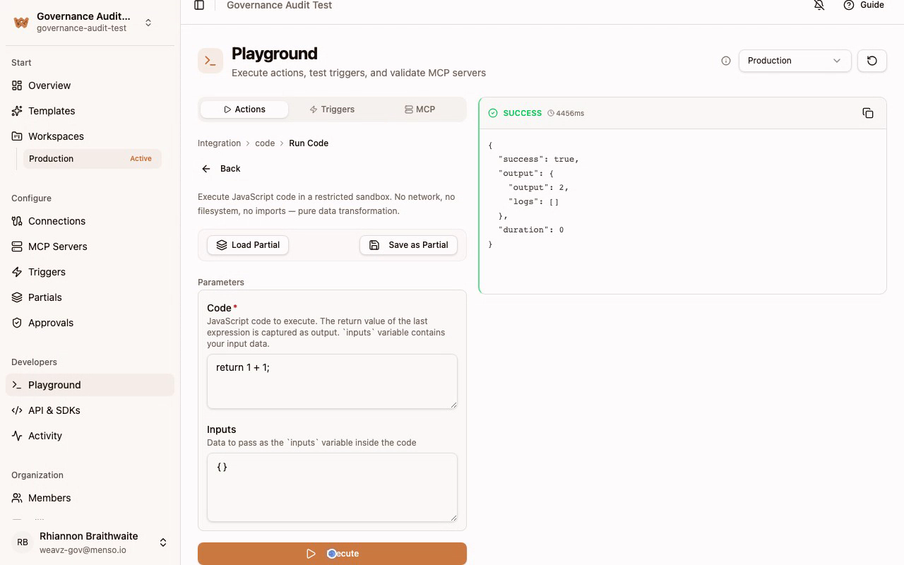
Think aloud: in - simple return 1 + 1. Now let's fire Execute and see if my policy actually stops this.
URL/context: https://dashboard.weavz.io/playground?workspaceId=2158037a-659f-4210-abff-9e4b7a8450e0&playgroundTab=actions
Think aloud: Hang on - it just ran straight through. Success, output 2, done in milliseconds. That's not what I'd expect if a human gate was actually sitting in front of this action.
URL/context: https://dashboard.weavz.io/playground?workspaceId=2158037a-659f-4210-abff-9e4b7a8450e0&playgroundTab=actions
Think aloud: Zero pending approvals, and my policy did say it was active. So either it's bound to the wrong action, or Human Gates just isn't intercepting this one. Let me check the Policies tab to see exactly what my gate is attached to.
URL/context: https://dashboard.weavz.io/approvals?workspaceId=2158037a-659f-4210-abff-9e4b7a8450e0
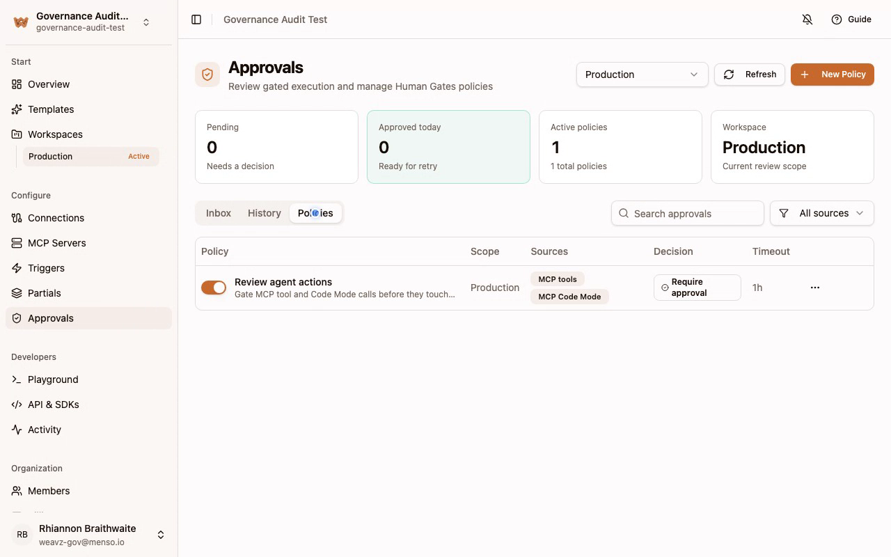
Think aloud: The result is still in progress. Clicking the status again does not reveal more, so I will give it a moment before deciding whether there is anything usable.
URL/context: https://dashboard.weavz.io/approvals?workspaceId=2158037a-659f-4210-abff-9e4b7a8450e0
Think aloud: The setup path is working, but the actual result is still processing. At this point I can judge setup and status clarity, not the quality of the final output.
URL/context: https://dashboard.weavz.io/approvals?workspaceId=2158037a-659f-4210-abff-9e4b7a8450e0